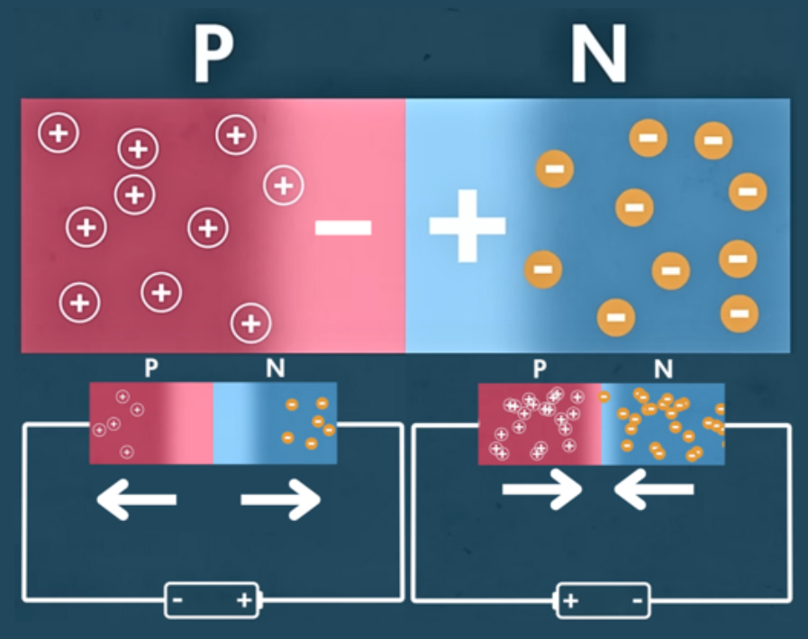

Semiconductors
How has this material changed our modern world?
SemiconductorsOur modern world is built on semiconducting materials. Without them, cheap LED lighting wouldn’t be available to illuminate our rooms and screens; solar cells wouldn’t be playing a key role in the energy transition; and every single modern device would be impossible to create without the billions of structures called transistors. It is safe to say that without these materials our current way of living would be significantly different. Semiconducting materials are so essential in the world of technology that Silicon Valley, the global centre of technological innovation, is named after the most commonly used semiconductor: Silicon. Gaining a deeper understanding of these materials is an interesting way of exploring the combination of chemistry and physics that have revolutionised our world.
The key feature of a semiconductor is that their conductivity is uniquely between that of an insulator and a conductor. To understand this at a more fundamental level we will explore the electronic configuration of these materials:
Semiconductor’s unique properties are explained by how electrons are positioned and move around the structure. Following the exact movement of the billions of electrons inside even a small sample of a material is not feasible so we’ll start simply by looking at the electronic configuration of a single atom. Every electron associated with the atom has a specific energy. The energy of a particular electron is said to be 0 eV (unit like Joules but a lot smaller) when the electron is infinitely far from the nucleus (i.e. no interaction between them). As the negatively charged electron is brought closer to the positively charged protons in nucleus, the opposite charges attract each other resulting in a favourable interaction which lowers the energy of the system. This gives electrons closer to the nucleus a more negative energy which means that more energy needs to be given to the electron for it to be freed from the electrostatic attractions. A very important detail is the fact that electrons can only occupy specific discrete energy levels. The value of these energy levels is defined by the principal quantum number which relates to the wavelike nature of electrons. Most people understand this through the “Bohr Model” with the orbits of electrons being certain distances away. If the lines of the orbits are straightened it gives a picture similar to the energy level diagram. Electrons can move between these levels by gaining or releasing the exact right amount of energy at a single moment.
In an atom, electrons are contained within atomic orbitals. These are regions of space in which up to 2 electrons with opposite spins can occupy.
Understanding the electronic configuration of a single atom allows us to apply our knowledge to a whole system of atoms interacting with each other; but let’s start simply with the introduction of 1 extra atom:
Take a single covalently bonded diatomic molecule. The once “atomic” orbitals combine to create multiple “molecular” orbitals. We use LCAO (”linear combination of atomic orbitals”) to model this process and to understand the new shapes of regions which the electrons can occupy, however, we are more interested in the energy of each orbital. Simply taking 2 atomic orbitals of the same energy level and combining them results in the creation of 2 molecular orbitals, one slightly higher in energy and one slightly lower in energy. The key qualities of this process to note are that the total number of orbitals is conserved and that the energy levels of the system fill the shape of a band more as more atoms are added. The diatomic system doubled the number of energy levels that appeared on our original diagram. When the number of atoms is increased to even just a single mole of a substance (6.022*10^24 atoms), the discrete energy levels begin to look less and less discrete and are said to be contained within a “continuous band”. The energy level diagram of the system now consists of energy bands which represent a continuum of energy levels.
Electrons occupy the lowest energy state they can and so bands are filled from the bottom up. The band of the highest energy that contains electrons is called the valence band and the next one above that is the conduction band. If the valence band is partially filled then the material is classified as a metal. The unoccupied energy levels in the partially filled band require a negligible amount of energy to move between and so electrons can move very easily throughout the structure. This explains metal’s conductive properties. Insulator’s and semiconductor’s valence bands are completely filled so much more energy is required to promote an electron to the conduction band where it would be able to move freely between energy states. What separates these materials is the difference in energy between the VBM and CBM. Insulators have a very large energy gap so to move electrons to the conduction band requires an amount of energy that is incredibly unlikely at room temperature. Semiconductors have an energy gap of about 3 eV or less. This means that in temperatures a little higher than room temperature a number of electrons are able to move freely through the structure. This property is what classifies “intrinsic” semiconductors.
Pure semiconductors, despite being much more conductive than insulators, still have very few electrons with enough energy to move freely through the structure. At room temperature, the number of thermally excited electrons per cm^3 in silicon (Si) is 1.5 × 10^10 while in a typical metal it is around 10^28 electrons per cm^3. To overcome this, the properties of semiconductors can be changed through “doping”. This is where a very small amount of an impurity is introduced to tune the material’s conductivity. Silicon, being the most common example, consists of a regular lattice structure where each atom is covalently bonded to 4 other Si atoms. This structure is slightly altered via 2 different methods of doping:
N-type doping involves the introduction of an impurity with one extra electron in its valence shell compared to the main element. The most common example of this is the introduction of phosphorous into a silicon lattice. P’s extra electron is very weakly bound to it (bond energies on order of hundredths of an eV) as it is not contained within a covalent bond. They are easily promoted to conduction band with a very small amount of energy which is represented on the band diagram as an imaginary “donor level” just below the conduction band. They are named n-type semiconductors as the majority charge carriers are negatively charged electrons.

P-type doping introduces an element with one fewer electron than the main element (e.g. Al into Si). This creates “holes” throughout the structure which are regions of positive charge that can be modelled as particles. A new imaginary “acceptor level” is created just above the valence band which demonstrates that new holes have been created which can facilitate the movement of electrons throughout the structure and so the material is now more capable of conducting. This system is best imagined by the movement of positively charged holes through the structure. The majority charge carriers are now positive holes, hence the name p-type semiconductor.
These extrinsic semiconductors now have significantly higher conductivity at RTP. The intrinsic properties of the semiconductors still have an effect but aren’t apparent at lower temperatures as the number of charge carriers introduced during doping is so much greater.
One method of doping a semiconductor is ion implantation where ionised dopants are accelerated with an electromagnetic field. These are directed at the silicon’s surface and penetrate to different depths depending on the dopants’ mass and energy. This can damage the surface of the semiconductor so to restore it and to further integrate the dopant, it is heated to about 1000°C.
An important structure in the world of semiconductors consists of neighbouring regions of p-type and n-type doped semiconductors. Holes from the P region can “diffuse” into N region while electrons from the N region “diffuse” into P. A region depleted of free charged particles is created, aptly named the “depletion region”. In the P side of this region, negative ionised impurities appear as electrons have been added to fill the shells of the impurity atoms. The opposite happens in the N side where positive ionised impurities are created as their extra electrons are taken away. This distribution of charges creates an electric field which acts as a potential barrier preventing the displacement of electrons and holes as it pulls electrons back towards the N if they ever start diffusing across.
When an external voltage is applied, the PN junction undergoes different behaviours depending on where the terminals are connected. If the positive terminal is connected to the N then electrons are drawn out to the battery. The negative terminal then draws out the holes leaving a larger depletion region. A new equilibrium is eventually reached where the extra charge buildup in the depletion zone can resist the pull of the battery so no current flows. When the terminals are inverted electrons pushed into N and holes pushed into P, shrinking the depletion zone. When the voltage is large enough, electrons jump across the depletion zone so a current is established.
This is the behaviour of a diode: Current is allowed to flow in only one direction through the component.
Diodes are used in many applications, an everyday example being LEDs. When an electron-hole pair combine across the junction, the electron’s energy decreases as it moves to a lower energy state which results in the release of a photon. The frequency of the electromagnetic wave emission is dependant on this energy difference. Different semiconductor materials and dopants are used to create a different energy difference across the band gaps. Si-based LEDs typically emit infrared. To emit visible light, alloys of GaAs or GaP are used for red, orange, and yellow while blue is created with GaN.
A very interesting behaviour comes from reversing the behaviour of LEDs. When light is shined onto the diode directly and if the photon has enough energy, a new electron-hole pair is produced as the electron is promoted to the conductance band. Instead of recombining to use up the energy again, electrons are transported to terminals connected to either side. The result is the creation of a voltage across a diode. The same exact mechanisms illuminating our rooms can be used for clean energy generation. Interestingly, when light is shined onto LEDs it generates a voltage. But solar cells are much more optimised than just shining a light on an LED. Lots of research goes into finding the correct combination of materials for maximum energy collection efficiency.
The most widely recognised role of semiconductors is the one they play in every single device that we use. Transistors have allowed the widespread use of a range of technologies thanks to the miniscule footprint of each one. Billions of these structures fit onto one processing chip which allows for complex calculations to be completed in a tiny area. The transistors we will explore are MOSFETs (metal-oxide-semiconductor-field-effect transistors) which are highly efficient transistors and are one of the most commonly used. The particular name for the one in the diagram is the “N-channel, depletion mode MOSFET” which works as follows: The source (negative terminal) and drain (positive terminal) are connected to a section of the semiconductor highly concentrated with n-type dopants. The rest of the semiconductor material is doped with a lower concentration of p-type. A thin insulating oxide layer separates the gate terminal from the substrate (semiconductor). A small voltage source’s positive terminal is connected to the gate while the negative is connected to the terminal attached to the substrate which creates an electric field across the substrate. The field exerts a force on electrons towards the insulator which results in a channel with free electrons and no holes. This region is now considered an n-type semiconductor and connects the n-type regions of the source and the drain allowing a current to run through. The ability to switch a current between an on and off state with a small amount of voltage in such a small space is where the real value of semiconductors is found. It allows billions of transistors to fit on a single CPU (20 billion on Apple’s M2 chip found in the newest iPads). The other important feature is that the output of one can be used directly as the input of another transistor so they can all collaborate seamlessly.
Semiconductors have been a vital material in constructing the world as we know it. Positive environmental impact is where they excel and they will continue to be essential in the energy transition. Solar farms making can be used to power whole cities in countries with plentiful sunlight (England may have to find an alternative) which provides a valuable alternative to the filthy energy generated from the burning of the fossil fuels that pollute our lands, seas, and skies. Once energy storage technology is developed further it may be used as a secure and consistent source of power. LED lighting also benefit the environment with their superior energy efficiency so less energy is wasted as heat (5% energy wasted as heat compared to fluorescent lighting’s 95% wasted). They also contain no toxic elements unlike the noxious chemicals (e.g. mercury) in fluorescent lighting. Their longer lifespan is up to six times longer than other types of lights so less resources are required for packaging, materials, and transportation. Finally, the most significant contribution of semiconductors to society is in the technological realm. The mammoth computational devices that filled entire rooms with clicking vacuum tubes have been condensed to the size of a postage stamp. It is safe to say that semiconductors are one of the most important types of materials; and it all stemmed from a few uniquely configured energy bands.
Introduction To Semiconductors, https://www.doitpoms.ac.uk/tlplib/semiconductors/index.php , (Accessed: September 2024).
How Does a MOSFET Work, https://www.nextpcb.com/blog/how-does-a-mosfetwork#:~:text=As%20a%20type%20of%20transistor,suited%20to%20a%20different%20purpose , (Accessed: September 2024).
How Light Emitting Diodes (LEDs) Work, https://electronics.howstuffworks.com/led.htm , (Accessed: September 2024).
Understanding the p-n Junction, https://www.unsw.edu.au/content/dam/pdfs/unsw-adobewebsites/science/faculty/2023-08-UNSW_Understanding_the_p-n_Junction.pdf , (Accessed: September 2024).
How diodes, LEDs and solar panels work, https://www.youtube.com/watch?v=TGUteH93xNo , (Accessed: September 2024).
How Does a MOSFET Work?, https://www.youtube.com/watch?v=rkbjHNEKcRw , (Accessed: September 2024).
Why and How Do We Dope Semiconductors?, https://www.azom.com/article.aspx?ArticleID=21657 , (Accessed: September 2024)
How has this material changed our modern world?
Semiconductors
How do electrons really behave in atoms?
Atomic Orbitals